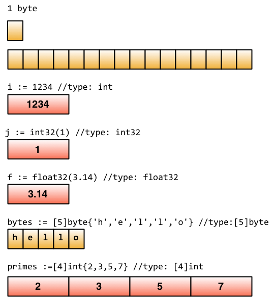
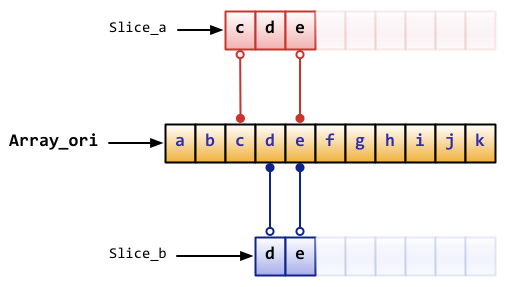

2.2 Go基础
这小节我们将要介绍如何定义变量、常量、Go内置类型以及Go程序设计中的一些技巧。
定义变量
Go语言里面定义变量有多种方式。
使用var关键字是Go最基本的定义变量方式，与C语言不同的是Go把变量类型放在变量名后面：
//定义一个名称为“variableName”，类型为"type"的变量
var variableName type
定义多个变量
//定义三个类型都是“type”的变量
var vname1, vname2, vname3 type
定义变量并初始化值
//初始化“variableName”的变量为“value”值，类型是“type”
var variableName type = value
同时初始化多个变量
/*
定义三个类型都是"type"的变量,并且分别初始化为相应的值
vname1为v1，vname2为v2，vname3为v3
*/
var vname1, vname2, vname3 type= v1, v2, v3
你是不是觉得上面这样的定义有点繁琐？没关系，因为Go语言的设计者也发现了，有一种写法可以让它变得简单一点。我们可以直接忽略类型声明，那么上面的代码变成这样了：
/*
定义三个变量，它们分别初始化为相应的值
vname1为v1，vname2为v2，vname3为v3
然后Go会根据其相应值的类型来帮你初始化它们
*/
var vname1, vname2, vname3 = v1, v2, v3
你觉得上面的还是有些繁琐？好吧，我也觉得。让我们继续简化：
/*
定义三个变量，它们分别初始化为相应的值
vname1为v1，vname2为v2，vname3为v3
编译器会根据初始化的值自动推导出相应的类型
*/
vname1, vname2, vname3 := v1, v2, v3
现在是不是看上去非常简洁了？:=这个符号直接取代了var和type,这种形式叫做简短声明。不过它有一个限制，那就是它只能用在函数内部；在函数外部使用则会无法编译通过，所以一般用var方式来定义全局变量。
_（下划线）是个特殊的变量名，任何赋予它的值都会被丢弃。在这个例子中，我们将值35赋予b，并同时丢弃34：
_, b := 34, 35
Go对于已声明但未使用的变量会在编译阶段报错，比如下面的代码就会产生一个错误：声明了i但未使用。
package main
func main() {
var i int
}
常量
所谓常量，也就是在程序编译阶段就确定下来的值，而程序在运行时无法改变该值。在Go程序中，常量可定义为数值、布尔值或字符串等类型。
它的语法如下：
const constantName = value
//如果需要，也可以明确指定常量的类型：
const Pi float32 = 3.1415926
下面是一些常量声明的例子：
const Pi = 3.1415926
const i = 10000
const MaxThread = 10
const prefix = "astaxie_"
Go 常量和一般程序语言不同的是，可以指定相当多的小数位数(例如200位)， 若指定給float32自动缩短为32bit，指定给float64自动缩短为64bit，详情参考链接
内置基础类型
Boolean
在Go中，布尔值的类型为bool，值是true或false，默认为false。
//示例代码
var isActive bool // 全局变量声明
var enabled, disabled = true, false // 忽略类型的声明
func test() {
var available bool // 一般声明
valid := false // 简短声明
available = true // 赋值操作
}
数值类型
整数类型有无符号和带符号两种。Go同时支持int和uint，这两种类型的长度相同，但具体长度取决于不同编译器的实现。Go里面也有直接定义好位数的类型：rune, int8, int16, int32, int64和byte, uint8, uint16, uint32, uint64。其中rune是int32的别称，byte是uint8的别称。
需要注意的一点是，这些类型的变量之间不允许互相赋值或操作，不然会在编译时引起编译器报错。
如下的代码会产生错误：invalid operation: a + b (mismatched types int8 and int32)
var a int8
var b int32
c:=a + b
另外，尽管int的长度是32 bit, 但int 与 int32并不可以互用。
浮点数的类型有float32和float64两种（没有float类型），默认是float64。
这就是全部吗？No！Go还支持复数。它的默认类型是complex128（64位实数+64位虚数）。如果需要小一些的，也有complex64(32位实数+32位虚数)。复数的形式为RE + IMi，其中RE是实数部分，IM是虚数部分，而最后的i是虚数单位。下面是一个使用复数的例子：
var c complex64 = 5+5i
//output: (5+5i)
fmt.Printf("Value is: %v", c)
字符串
我们在上一节中讲过，Go中的字符串都是采用UTF-8字符集编码。字符串是用一对双引号（""）或反引号（` ` ）括起来定义，它的类型是string。
//示例代码
var frenchHello string // 声明变量为字符串的一般方法
var emptyString string = "" // 声明了一个字符串变量，初始化为空字符串
func test() {
no, yes, maybe := "no", "yes", "maybe" // 简短声明，同时声明多个变量
japaneseHello := "Konichiwa" // 同上
frenchHello = "Bonjour" // 常规赋值
}
在Go中字符串是不可变的，例如下面的代码编译时会报错：cannot assign to s[0]
var s string = "hello"
s[0] = 'c'
但如果真的想要修改怎么办呢？下面的代码可以实现：
s := "hello"
c := []byte(s) // 将字符串 s 转换为 []byte 类型
c[0] = 'c'
s2 := string(c) // 再转换回 string 类型
fmt.Printf("%s\n", s2)
Go中可以使用+操作符来连接两个字符串：
s := "hello,"
m := " world"
a := s + m
fmt.Printf("%s\n", a)
修改字符串也可写为：
s := "hello"
s = "c" + s[1:] // 字符串虽不能更改，但可进行切片操作
fmt.Printf("%s\n", s)
如果要声明一个多行的字符串怎么办？可以通过` 来声明：
m := `hello
world`
` 括起的字符串为Raw字符串，即字符串在代码中的形式就是打印时的形式，它没有字符转义，换行也将原样输出。例如本例中会输出：
hello
world
错误类型
Go内置有一个error类型，专门用来处理错误信息，Go的package里面还专门有一个包errors来处理错误：
err := errors.New("emit macho dwarf: elf header corrupted")
if err != nil {
fmt.Print(err)
}
Go数据底层的存储
下面这张图来源于Russ Cox Blog中一篇介绍Go数据结构的文章，大家可以看到这些基础类型底层都是分配了一块内存，然后存储了相应的值。

图2.1 Go数据格式的存储
一些技巧
分组声明
在Go语言中，同时声明多个常量、变量，或者导入多个包时，可采用分组的方式进行声明。
例如下面的代码：
import "fmt"
import "os"
const i = 100
const pi = 3.1415
const prefix = "Go_"
var i int
var pi float32
var prefix string
可以分组写成如下形式：
import(
"fmt"
"os"
)
const(
i = 100
pi = 3.1415
prefix = "Go_"
)
var(
i int
pi float32
prefix string
)
iota枚举
Go里面有一个关键字iota，这个关键字用来声明enum的时候采用，它默认开始值是0，const中每增加一行加1：
const(
x = iota // x == 0
y = iota // y == 1
z = iota // z == 2
w // 常量声明省略值时，默认和之前一个值的字面相同。这里隐式地说w = iota，因此w == 3。其实上面y和z可同样不用"= iota"
)
const v = iota // 每遇到一个const关键字，iota就会重置，此时v == 0
const (
e, f, g = iota, iota, iota //e=0,f=0,g=0 iota在同一行值相同
)
const （
a = iota a=0
b = "B"
c = iota //c=2
d,e,f = iota,iota,iota //d=3,e=3,f=3
g //g = 4
）
除非被显式设置为其它值或
iota，每个const分组的第一个常量被默认设置为它的0值，第二及后续的常量被默认设置为它前面那个常量的值，如果前面那个常量的值是iota，则它也被设置为iota。
Go程序设计的一些规则
Go之所以会那么简洁，是因为它有一些默认的行为：
- 大写字母开头的变量是可导出的，也就是其它包可以读取的，是公用变量；小写字母开头的就是不可导出的，是私有变量。
- 大写字母开头的函数也是一样，相当于
class中的带public关键词的公有函数；小写字母开头的就是有private关键词的私有函数。
array、slice、map
array
array就是数组，它的定义方式如下：
var arr [n]type
在[n]type中，n表示数组的长度，type表示存储元素的类型。对数组的操作和其它语言类似，都是通过[]来进行读取或赋值：
var arr [10]int // 声明了一个int类型的数组
arr[0] = 42 // 数组下标是从0开始的
arr[1] = 13 // 赋值操作
fmt.Printf("The first element is %d\n", arr[0]) // 获取数据，返回42
fmt.Printf("The last element is %d\n", arr[9]) //返回未赋值的最后一个元素，默认返回0
由于长度也是数组类型的一部分，因此[3]int与[4]int是不同的类型，数组也就不能改变长度。数组之间的赋值是值的赋值，即当把一个数组作为参数传入函数的时候，传入的其实是该数组的副本，而不是它的指针。如果要使用指针，那么就需要用到后面介绍的slice类型了。
数组可以使用另一种:=来声明
a := [3]int{1, 2, 3} // 声明了一个长度为3的int数组
b := [10]int{1, 2, 3} // 声明了一个长度为10的int数组，其中前三个元素初始化为1、2、3，其它默认为0
c := [...]int{4, 5, 6} // 可以省略长度而采用`...`的方式，Go会自动根据元素个数来计算长度
也许你会说，我想数组里面的值还是数组，能实现吗？当然咯，Go支持嵌套数组，即多维数组。比如下面的代码就声明了一个二维数组：
// 声明了一个二维数组，该数组以两个数组作为元素，其中每个数组中又有4个int类型的元素
doubleArray := [2][4]int{[4]int{1, 2, 3, 4}, [4]int{5, 6, 7, 8}}
// 上面的声明可以简化，直接忽略内部的类型
easyArray := [2][4]int{{1, 2, 3, 4}, {5, 6, 7, 8}}
数组的分配如下所示：

图2.2 多维数组的映射关系
slice
在很多应用场景中，数组并不能满足我们的需求。在初始定义数组时，我们并不知道需要多大的数组，因此我们就需要“动态数组”。在Go里面这种数据结构叫slice
slice并不是真正意义上的动态数组，而是一个引用类型。slice总是指向一个底层array，slice的声明也可以像array一样，只是不需要长度。
// 和声明array一样，只是少了长度
var fslice []int
接下来我们可以声明一个slice，并初始化数据，如下所示：
slice := []byte {'a', 'b', 'c', 'd'}
slice可以从一个数组或一个已经存在的slice中再次声明。slice通过array[i:j]来获取，其中i是数组的开始位置，j是结束位置，但不包含array[j]，它的长度是j-i。
// 声明一个含有10个元素元素类型为byte的数组
var ar = [10]byte {'a', 'b', 'c', 'd', 'e', 'f', 'g', 'h', 'i', 'j'}
// 声明两个含有byte的slice
var a, b []byte
// a指向数组的第3个元素开始，并到第五个元素结束，
a = ar[2:5]
//现在a含有的元素: ar[2]、ar[3]和ar[4]
// b是数组ar的另一个slice
b = ar[3:5]
// b的元素是：ar[3]和ar[4]
注意
slice和数组在声明时的区别：声明数组时，方括号内写明了数组的长度或使用...自动计算长度，而声明slice时，方括号内没有任何字符。
它们的数据结构如下所示

图2.3 slice和array的对应关系图
slice有一些简便的操作
slice的默认开始位置是0，ar[:n]等价于ar[0:n]slice的第二个序列默认是数组的长度，ar[n:]等价于ar[n:len(ar)]- 如果从一个数组里面直接获取
slice，可以这样ar[:]，因为默认第一个序列是0，第二个是数组的长度，即等价于ar[0:len(ar)]
下面这个例子展示了更多关于slice的操作：
// 声明一个数组
var array = [10]byte{'a', 'b', 'c', 'd', 'e', 'f', 'g', 'h', 'i', 'j'}
// 声明两个slice
var aSlice, bSlice []byte
// 演示一些简便操作
aSlice = array[:3] // 等价于aSlice = array[0:3] aSlice包含元素: a,b,c
aSlice = array[5:] // 等价于aSlice = array[5:10] aSlice包含元素: f,g,h,i,j
aSlice = array[:] // 等价于aSlice = array[0:10] 这样aSlice包含了全部的元素
// 从slice中获取slice
aSlice = array[3:7] // aSlice包含元素: d,e,f,g，len=4，cap=7
bSlice = aSlice[1:3] // bSlice 包含aSlice[1], aSlice[2] 也就是含有: e,f
bSlice = aSlice[:3] // bSlice 包含 aSlice[0], aSlice[1], aSlice[2] 也就是含有: d,e,f
bSlice = aSlice[0:5] // 对slice的slice可以在cap范围内扩展，此时bSlice包含：d,e,f,g,h
bSlice = aSlice[:] // bSlice包含所有aSlice的元素: d,e,f,g
slice是引用类型，所以当引用改变其中元素的值时，其它的所有引用都会改变该值，例如上面的aSlice和bSlice，如果修改了aSlice中元素的值，那么bSlice相对应的值也会改变。
从概念上面来说slice像一个结构体，这个结构体包含了三个元素：
- 一个指针，指向数组中
slice指定的开始位置 - 长度，即
slice的长度 最大长度，也就是
slice开始位置到数组的最后位置的长度Array_a := [10]byte{'a', 'b', 'c', 'd', 'e', 'f', 'g', 'h', 'i', 'j'} Slice_a := Array_a[2:5]
上面代码的真正存储结构如下图所示

图2.4 slice对应数组的信息
对于slice有几个有用的内置函数：
len获取slice的长度cap获取slice的最大容量append向slice里面追加一个或者多个元素，然后返回一个和slice一样类型的slicecopy函数copy从源slice的src中复制元素到目标dst，并且返回复制的元素的个数
注：append函数会改变slice所引用的数组的内容，从而影响到引用同一数组的其它slice。
但当slice中没有剩余空间（即(cap-len) == 0）时，此时将动态分配新的数组空间。返回的slice数组指针将指向这个空间，而原数组的内容将保持不变；其它引用此数组的slice则不受影响。
从Go1.2开始slice支持了三个参数的slice，之前我们一直采用这种方式在slice或者array基础上来获取一个slice
var array [10]int
slice := array[2:4]
这个例子里面slice的容量是8，新版本里面可以指定这个容量
slice = array[2:4:7]
上面这个的容量就是7-2，即5。这样这个产生的新的slice就没办法访问最后的三个元素。
如果slice是这样的形式array[:i:j]，即第一个参数为空，默认值就是0。
map
map也就是Python中字典的概念，它的格式为map[keyType]valueType
我们看下面的代码，map的读取和设置也类似slice一样，通过key来操作，只是slice的index只能是｀int｀类型，而map多了很多类型，可以是int，可以是string及所有完全定义了==与!=操作的类型。
// 声明一个key是字符串，值为int的字典,这种方式的声明需要在使用之前使用make初始化
var numbers map[string]int
// 另一种map的声明方式
numbers := make(map[string]int)
numbers["one"] = 1 //赋值
numbers["ten"] = 10 //赋值
numbers["three"] = 3
fmt.Println("第三个数字是: ", numbers["three"]) // 读取数据
// 打印出来如:第三个数字是: 3
这个map就像我们平常看到的表格一样，左边列是key，右边列是值
使用map过程中需要注意的几点：
map是无序的，每次打印出来的map都会不一样，它不能通过index获取，而必须通过key获取map的长度是不固定的，也就是和slice一样，也是一种引用类型- 内置的
len函数同样适用于map，返回map拥有的key的数量 map的值可以很方便的修改，通过numbers["one"]=11可以很容易的把key为one的字典值改为11map和其他基本型别不同，它不是thread-safe，在多个go-routine存取时，必须使用mutex lock机制
map的初始化可以通过key:val的方式初始化值，同时map内置有判断是否存在key的方式
通过delete删除map的元素：
// 初始化一个字典
rating := map[string]float32{"C":5, "Go":4.5, "Python":4.5, "C++":2 }
// map有两个返回值，第二个返回值，如果不存在key，那么ok为false，如果存在ok为true
csharpRating, ok := rating["C#"]
if ok {
fmt.Println("C# is in the map and its rating is ", csharpRating)
} else {
fmt.Println("We have no rating associated with C# in the map")
}
delete(rating, "C") // 删除key为C的元素
上面说过了，map也是一种引用类型，如果两个map同时指向一个底层，那么一个改变，另一个也相应的改变：
m := make(map[string]string)
m["Hello"] = "Bonjour"
m1 := m
m1["Hello"] = "Salut" // 现在m["hello"]的值已经是Salut了
make、new操作
make用于内建类型（map、slice 和channel）的内存分配。new用于各种类型的内存分配。
内建函数new本质上说跟其它语言中的同名函数功能一样：new(T)分配了零值填充的T类型的内存空间，并且返回其地址，即一个*T类型的值。用Go的术语说，它返回了一个指针，指向新分配的类型T的零值。有一点非常重要：
new返回指针。
内建函数make(T, args)与new(T)有着不同的功能，make只能创建slice、map和channel，并且返回一个有初始值(非零)的T类型，而不是*T。本质来讲，导致这三个类型有所不同的原因是指向数据结构的引用在使用前必须被初始化。例如，一个slice，是一个包含指向数据（内部array）的指针、长度和容量的三项描述符；在这些项目被初始化之前，slice为nil。对于slice、map和channel来说，make初始化了内部的数据结构，填充适当的值。
make返回初始化后的（非零）值。
下面这个图详细的解释了new和make之间的区别。

图2.5 make和new对应底层的内存分配
零值
关于“零值”，所指并非是空值，而是一种“变量未填充前”的默认值，通常为0。 此处罗列 部分类型 的 “零值”
int 0
int8 0
int32 0
int64 0
uint 0x0
rune 0 //rune的实际类型是 int32
byte 0x0 // byte的实际类型是 uint8
float32 0 //长度为 4 byte
float64 0 //长度为 8 byte
bool false
string ""